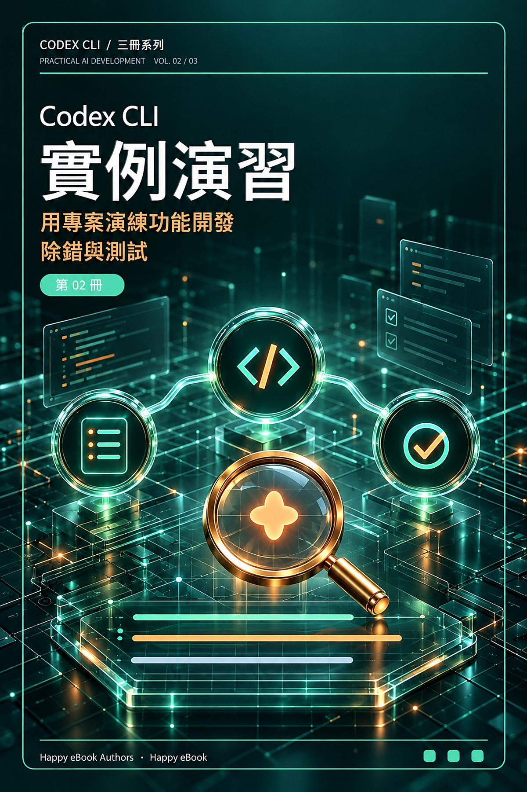

Google Play Books
Codex CLI 實例演習
用專案演練功能開發、除錯與測試

付費購買提供試閱版
Codex CLI 實例演習
用專案演練功能開發、除錯與測試
已經會啟動 Codex CLI，下一步如何把 AI 協作變成可驗收的專案成果？本書是 Codex CLI 系列第二冊，以兩個獨立案例帶你實作：為待辦程式加入完成狀態與資料遷移，以及重現、修正搜尋缺陷，再進行不改變行為的重構。從寫清任務卡、盤點專案，到建立測試、處理需求變更、判讀 review 與整理交接，每個階段都留下可以核對的程式、測試或紀錄。你將練習把模糊需求轉成資料契約與驗收條件，檢查 Git diff，以測試證據確認修正，並區分「模型說完成」與「實際驗證通過」。另提供唯讀 codex exec 延伸練習，協助理解非互動工作方式。適合已具備 Codex CLI 基礎、能使用 Git 分支、閱讀基本 diff，並執行 Python 3 標準函式庫測試的讀者。主要命令以 Linux、macOS 或 WSL shell 為例。公開讀者服務倉庫提供範例、練習素材與索引，不包含完整章節；請依書中指引核對版本與案例邊界。